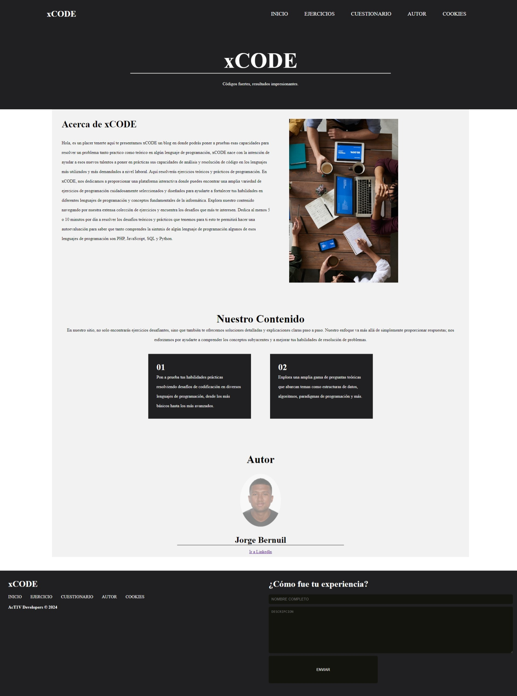
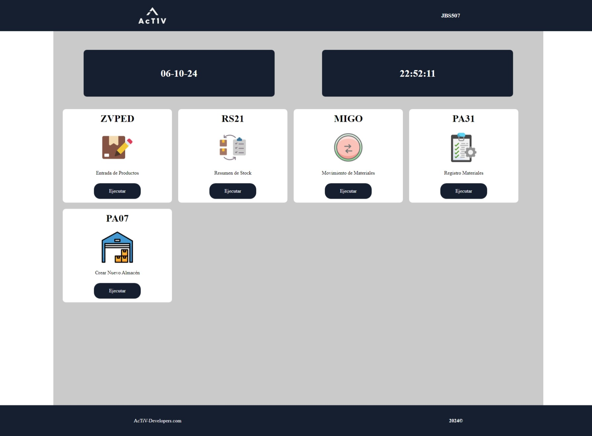

Mis proyectos

XCODE
XCODE es una aplicación web que desarrollé y su funcionalidad principal es colocar una serie de exámenes de prueba con algún lenguaje de programación y la tarea del usuario es responder con la respuesta correcta, si son correctas o no la aplicación se lo hará saber.
Herramientas Utilizadas
- HTML
- CSS
- PHP
- MySQL

Portafolio Web para Porfesional de la Pintura
He diseñado este sitio web como un portafolio personal y está dirigido principalmente a pintores profesionales. Aquí se destaca toda la información sobre el pintor y sus obras más emblemáticas.
Herramientas Utilizadas
- HTML
- CSS
- JavaScript

Aplicacion Web para la gestion de inventarios entre almacenes
La función principal de esta aplicación web es la gestión eficiente de los inventarios de productos de una tienda, desde el registro de la información del producto así como su cantidad en stock, hasta la actualización y eliminación de cantidades en stock.
Herramientas Utilizadas
- HTML
- CSS
- PHP
- MySQL